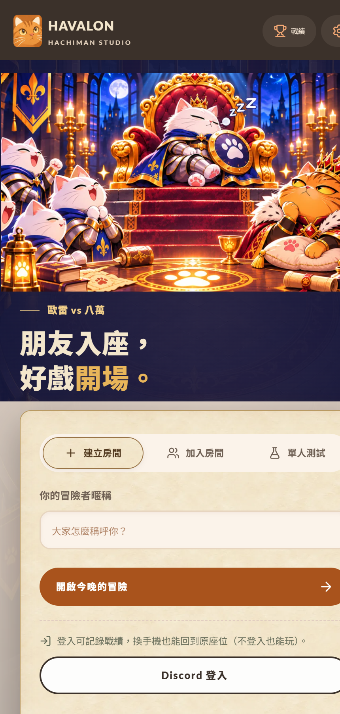
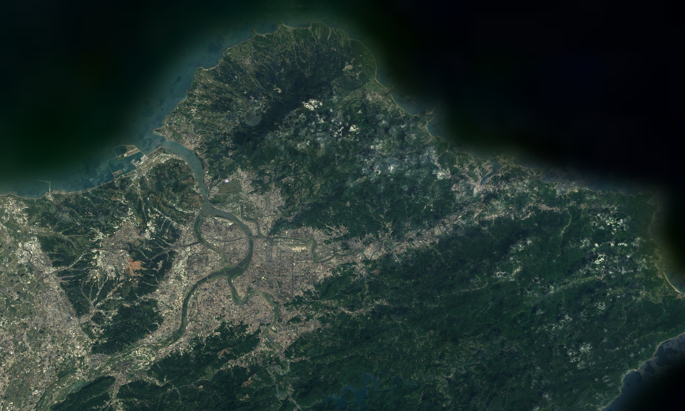

AI 業務助理（企業示範）
2026.10 – 現在為多家日本製造業、汽車業客戶製作的 AI 業務助理示範，涵蓋接單、規格書管理等流程。
- 依各客戶的業務流程設計並調整畫面
- 以共通的基礎版本快速衍生各客戶專用的示範
- 部署至 Azure 供客戶實際操作
Web・Azure・AI
台灣出身的軟體工程師。Java 企業系統、Next.js／FastAPI 全端，以及 MCP 與 AI 輔助開發。中文母語，日文 JLPT N1，英文 TOEIC 825。
寫信給我系統開發約 4 年半：2021 年在台灣的銀行起步，2022 年 12 月起在日本。
Java 企業系統是我的主場。Spring、Hibernate、Oracle 和 PostgreSQL，新開發、重建、維護和 WebLogic 基礎架構更新都做過。
現在做全端：用 Next.js／React 加 FastAPI，從資料表設計一路做到 Docker 部署。
也把 AI 放進實際工作：讓 AI 助理透過 MCP 操作既有的簽核系統，開發時用 Claude Code 和 Codex。
在日本的團隊裡，我也擔任日籍設計者與中國籍開發者之間的口譯。看完整經歷
選一項技術，看它用在哪幾段經歷。
MCT Japan｜2026.05 – 現在
為多家日本製造業、汽車業客戶製作的 AI 業務助理示範，涵蓋接單、規格書管理等流程。
Web・Azure・AI
集中管理農業法人與就農者從登錄、申請、審查到補助款請領的 Web 系統。負責工程：基本設計～整合測試。
Python・FastAPI・SQLAlchemy・TypeScript・Next.js・React・PostgreSQL・Alembic・Docker・pytest
讓 AI 助理透過 MCP 查詢、起草、送出與審核日本企業簽核 SaaS 上的申請。在既有的 VB.NET WebForms 系統之外另建 ASP.NET Core API，由 Python MCP 伺服器呼叫。
Python・FastAPI・MCP・ASP.NET Core・C#・VB.NET・Azure
スリーティソフト｜2022.12 – 2026.04
將既有的 C# 系統以 Java・React 重新開發。團隊 15 人，負責工程：詳細設計～整合測試。
Java・Spring・React・Oracle
因授權到期進行的基礎架構更新與架構調整。團隊 15 人，負責工程：基本設計～單元測試。
Java・WebLogic・Oracle・Linux
資訊管理系統的維護與基礎架構升級。團隊 15 人，負責工程：開發～單元測試、維運。
Java・TERASOLUNA・JSP・Hibernate・PostgreSQL・Shell
既有系統的新版本開發。團隊 15 人，負責工程：詳細設計～整合測試。
Java・Spring・JSF・Hibernate・PostgreSQL
玉山銀行 資訊處｜2021.01 – 2021.06
負責海外分行的業務需求。新人訓練後主要負責香港分行開戶系統上線，以及開戶、存款、匯款功能的維護與追加開發。團隊 30 人，負責工程：詳細設計～單元測試。
Java・Hibernate・SQL Server・Oracle
學生時期
以網頁除錯為主，因此熟悉網頁架構；也在大量協作中學到業界的溝通方式、開發流程，以及對工程師的要求。
課程目標是讓學生組隊做出一套桌遊。我負責引導討論方向並適時提出建議，8 組學生都完成了自己的桌遊。

手機多人連線的阿瓦隆桌遊，含擴充角色、語音通話、逐字稿與 AI 復盤。我做了圓桌與隊長輪替畫面、投票與任務卡對話框、手機休眠後語音自動重連、麥克風被拒時的降級處理，以及請求逾時與過期資料清除。Next.js・TypeScript・Drizzle ORM・Cloudflare Workers。線上遊玩
卡關時 AI 分三層引導下一步該怎麼想，不直接給答案；AI 的推理先用正確解答核對，錯了就不顯示。支援 6 家 AI 的 API、照片匯入題目、筆記與鎖定數字模式，從 GitHub Releases 自動更新，不用任何第三方套件。Kotlin。GitHub
漫畫閱讀 App。解析網站頁面取得作品與章節，三種閱讀模式與縮放手勢，用前景服務在背景持續檢查追蹤作品的更新；資料全部存在手機本機。以 Product Flavors 管理多個版本，並寫了一鍵建置、驗證簽章、發布的腳本。Java・jsoup・Gradle。

為一家日本企業重建官網而自製的主題。從 EPS 原始檔自行轉出 SVG 商標，以設計 token 管理配色並實測 WCAG 對比度，支援日・英・簡中三語與 OGP 自動產生。PHP・CSS・Python。

用衛星影像與 3D 運鏡介紹台灣行政區，全部以程式生成的影片；這一頁右側的衛星圖就是片中用的素材。Remotion・WebGL・FFmpeg。
輸入手牌即可算出符數、翻數與點數，以 GitHub Releases 發布 APK。Kotlin・Gradle。
瀏覽與分析個人社群貼文、限時動態典藏的單檔網頁工具，有地圖與 AI 分析。JavaScript。
把 Threads 上的貼文依「一般／商業」分類整理的個人化動態牆 App。Android。
我是陳鉅仁。2020 年從國立中央大學資訊工程學系畢業，在玉山銀行寫海外分行的系統，2022 年底來到日本。
在日本的前三年多，我在スリーティソフト做 Java 企業系統，從詳細設計、開發、測試到 WebLogic 的建置都做過。2026 年 5 月起在 MCT Japan，工作轉向全端與 AI。
中文是母語，日文 JLPT N1，英文 TOEIC 825。能用中日文寫設計書、開會，也替團隊做過口譯。
下班後我寫 Android App 和小工具，上面的專案大多是這樣來的。
陳鉅仁
軟體工程師
按下箭頭會開啟你的郵件軟體，內容已經填好。